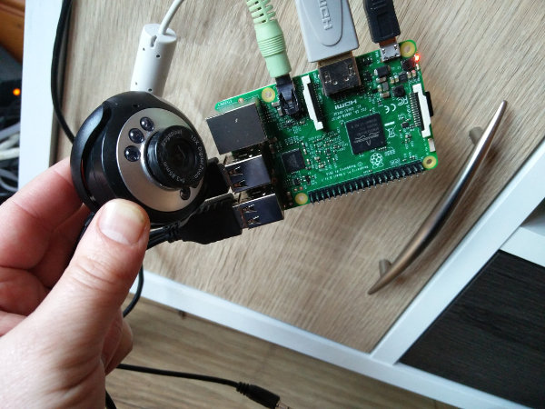

Getting Started
It is possible to buy a dedicated Raspberry Pi camera module but for this exercise we are going to use a normal USB WebCam with the Raspberry Pi to create a Time-Lapse video. We will program the Pi using a little Shell/Bash code.
Connect the camera
To start you'll need to connect the camera to the Raspberry Pi using one of the USB ports.
-
Locate the USB port and connect the Web Cam:

-
Start up the Pi.
-
Open the Terminal from the main menu:

-
Ensure the camera is recognised by typing:
lsusbAfter pressing the Enter keyboard key you should see a reference to your Web Cam e.g.
Bus 002 Device 003: ID 0c45:62c0 Microdia Sonix USB 2.0 Camera
Ensure Software is Installed
To capture images from the Web Cam we will use a program named 'fswebcam'. Again in your Terminal type the command fswebcam
-
Ensure the software is available:
sudo apt-get install fswebcam mencoder -
If the fswebcam is not already installed then the command above will fetch it from the internet and install it on your Raspberry Pi.
Capture an Image
Now your camera is connected, you can get started by trying to capture an image preview.
-
In the Terminal type the following command to take a photo:
fswebcam image.jpg - You should get some output telling you that the image was captured.
-
Open the File Manager from the main menu
- Locate and open the captured image i.e. image.jpg:
-
You should notice that the image is black with no detail. We need to tell the camera to wait for a few seconds so it has finished adjusting for the exposure. We can do this by adding -S 20 to the command. Try the following in the Terminal:
fswebcam -S 20 image.jpg -
We can also remove the the banner from the image by adding --no-banner to the command. Try the following:
fswebcam -S 20 -r 640x480 --no-banner image.jpg
Bash Script
In this section of the exercise we will use a programming language called Bash. We will create a Bash script (program) to take multiple photos using the webcam and later we will join the photos to create a time-lapse video.
- Open a Text Editor
- Enter the following Bash code into the Text Editor:
- Save the file as create-timelapse.sh
-
Return to the Terminal and type the following command to run the Bash code you saved:
bash create-timelapse.sh -
This code will run for approximately 17 minutes and will save a photo every 10 seconds. When the code has finished running you should find 100 photos in your File Manager.
#!/bin/bash
DATE=$(date +"%Y-%m-%d_%H%M")
for i in {1..100}
do
fswebcam -S 20 --no-banner /home/pi/$DATE.jpg
sleep 10
done
Combine the Photos into a Video
Now you'll need to stitch the photos together to create a video.
You can do this on the Pi using mencoder. First create a list of the names of your photo files:
- Open your Terminal again and type the following: ls *.jpg > stills.txt
- This will create a file named stills.txt with the names of all files that end with .jpg.We will use the stills.txt file as input to mencoder.
- Type the following command into the Terminal to join all the files into a video (do not press the enter key until after the .txt bit at the end):
- Once that's completed, you should have a video file called timelapse.avi containing a time-lapse from your images.
mencoder -nosound -ovc lavc -lavcopts vcodec=mpeg4:aspect=16/9:vbitrate=8000000 -vf scale=1920:1080 -o timelapse.avi -mf type=jpeg:fps=24 mf://@stills.txt